Automated Shot Maps In Tableau (Make Grid in Alteryx)
Hi all,
Hope everyone is doing well. Last week I got to attend Salesforce London World Tour on AI. So I'm still on a bit of a high from that having got to hang with Tableau friends, the wider community and hear from Mo Gawdat in the closing note from the day. In a rapidly changing environment, I find myself constantly in a position of listening and learning which I love!
Anyway for today we leave AI at the door and go back to our tried and tested Tableau & Alteryx.
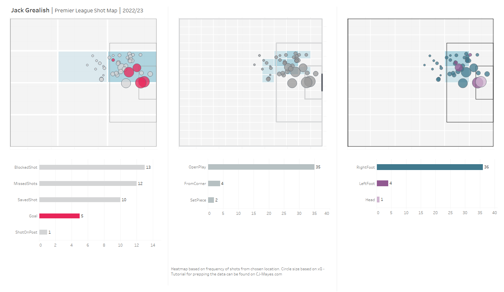
A week or so ago I wrote about how we can make our shot maps a little bit prettier in Tableau. Most of it was replicating design ideas seen in the Analyst website.... although I'm sure they do theirs through code? Who knows. Anyway, it got me really thinking. On MPLsoccer they have so many great examples of different pitch charts we can create and some are harder than others when trying to replicate it in Tableau.
One of those charts is grid heat maps.
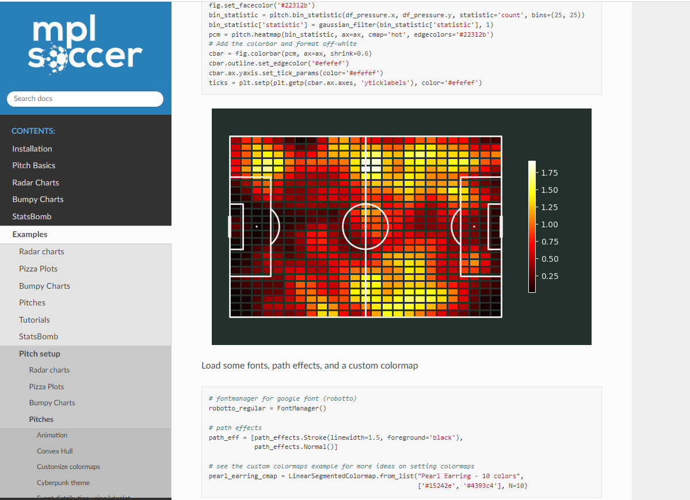
Now, I was really fortunate to be able to host back in Q1 of this year a guest blog from Fuad who produced such stunning heatmaps for shots in his Iron Viz entry for the 2023 feeder. It was a lovely workflow he shared, but the workflow did assume that the grid would have to be worked out based on the co-ordinates. I.e if you got a width of 10 then if you want 10 grids its a width of 1, 5 grids width of 2 etc.
It got me thinking could we get it so we can just input an arbitrary number and that will help solve our grid issue?
Well - I've come up with an alteryx solution that I hope people will enjoy. We will then visualise it in Tableau. So Todays blog is all about the Make Grid function in Alteryx.
Lets start with the data prep.
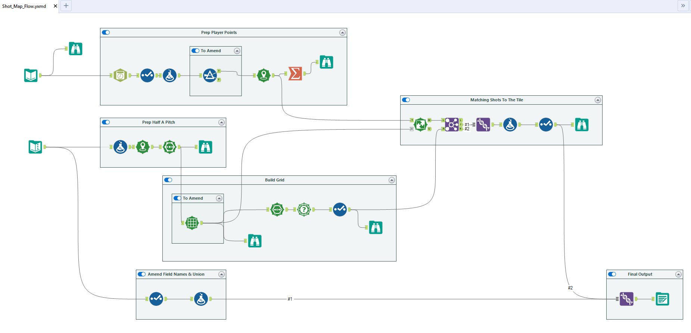
Bit of a chunky flow but we will explain each part.
First things first is our dataset. We use understat data for the EPL 22/23 season. You can find a copy on my Github link at the top of the page, alongside the other resources to save locally.
PREP PLAYER POINTS
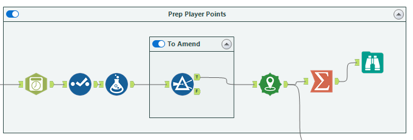
The first three tools are really cleaning and transforming, nothing too crazy going on. I do end up scaling my X & Y points up drastically as I find bigger numbers easier to understand than small decimals, this is of course just preference and they get scaled back down at the end.
The To Amend is a filter I added in, you'll see in my dashboard I end up restricting my points to just Jack Grealish's shots. Do update this or remove it if you want alternative players.
The create points is a well named tool that.... makes points. We set our longitude and latitude values to our x and y co-ordinates.
By using the summarise tool and combine action we are able to build this into one spatial object.
The output of that data looks like this
At this point you might think it's a little confusing with no context. It's always good to remember we have the understat website as a reference point.
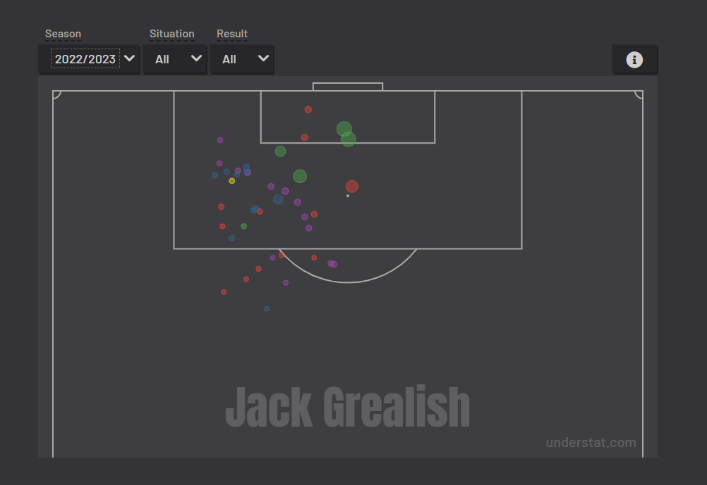
HALF PITCH
The next thing we want to do is to start building a base of points for the pitch. (Of course, we can render these as a background image in Tableau, but why not for this tutorial we give it a go creating a pitch using lines!
First we scale our pitch values to that seen within the top half of the flow for convenience.
We use the create points to identify the pitch sections including the 6 yard box, penalty box and half of the pitch.
Next we add the Poly Build tool which helps us essentially assign a path order to our plotted points to build the frame of our pitch.
I do recognise this is a little basic. Since drawing this i've gone back and added in some extra lines for the goal that we can bring into Tableau. The other thing to note is it is missing the semi-circle on the left, perhaps I add that in too at some point.
You'll also see the weird stripe to the left.... reason I've added that in is because my grid wasn't aligning properly so needed to make the pitch wider to allow the next steps to fit. We can hide it when it comes to the final visual.
Next up is where the real magic happens. Make Grid!
BUILD THE GRID
Onto my magical Make Grid. We can set this value at different values to split our chart up. In my Tableau Output you will see that I have tried three different variations.
1 at 1.47 which gives a 3*4 grid.
1 at 0.735 which gives a 6*8 grid
1 at 0.3675 which gives a 12*16 grid.
Really all this is doing is creating those grids that we will overlay on top of our pitch.
But now we really want to find what the co-ordinates are for each square!
We then use the PolySplit field to split each of the grids into points.
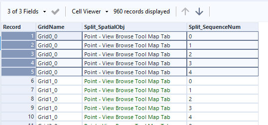
Each grid is 5 points joined up in a specific order to create the square.
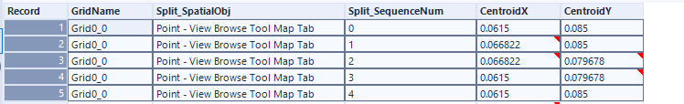
By using the Spatial info tool, we can find the centroid as X and Y co-ordinates, identifying where they lie for each point. This way we will be able to create a dataset underlay for our polygons.
That's all well and good so to this point in the tutorial we have:
Decided which players shots we are looking at
Built a framework for the pitch to plot the shots
Been able to create a grid to start to overlay onto the pitch.
We have one final big step to do, and that's to understand of each of the shots what grid do they land in?
That brings me onto the final part of the flow.
MATCHING SHOTS TO THE TILE
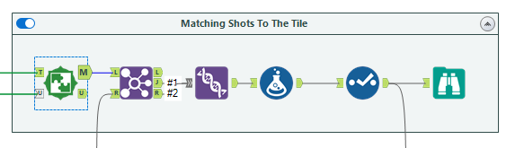
We use the spatial match tool here, with the target as our centroid field (the X and Y of the players shots) and the Universe connector is then the grid field. I.e which grid does the shot take place.
The Join tool is then used to bring in the polygon co-ordinates for each shot (yes 5 rows for each shot) This might start to explode your dataset so use with caution. You might want to rework this step otherwise.
The last part to this is a matter of clean up.
Before I produce the final output I end up gluing in a full outer join the pitch details just so i can have this in my dataset, realistically this shouldn't be in our dataset but it was easier to have it all in one file.
Then we finally export our data to a CSV.
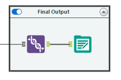
TABLEAU TIME
You will find my visual attached at the top of this blog using the usual links. I don't think for the sake of this blog I will need to explain how map layers works - do just read any other tableau blog of mine if you need a little help, but lets take a little look at the different layers in action.
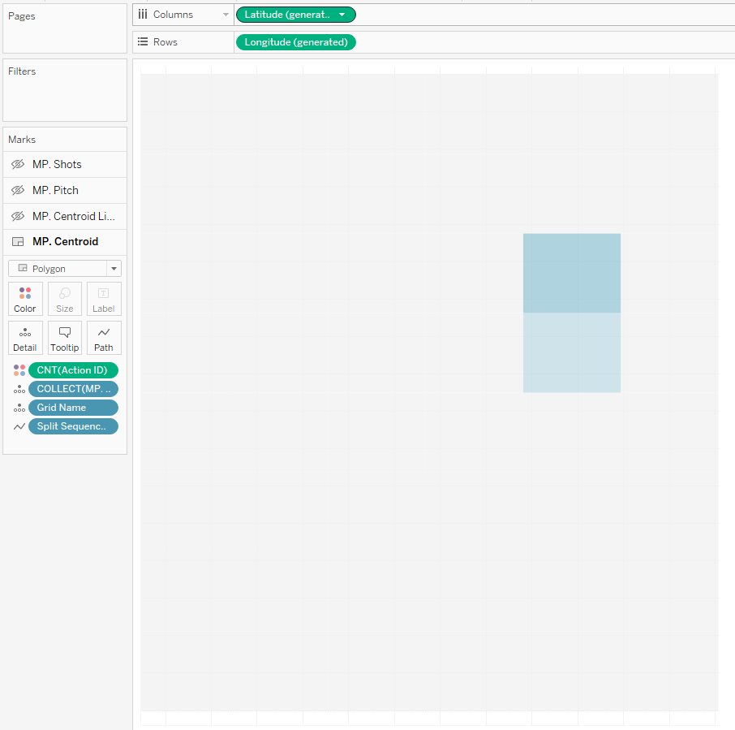
The first layer is using the grid information. We make separate grids of action, making sure the split sequence is on path to join our squares. This mark type is a Polygon. We are then able to count the number of actions in each box! More ActionID's relate to more shots taken.
The next layer we start to think about bordering the polygons. Of course we could use the custom border but these are at preset levels. By adding in the same layer but making it a line, we can adjust the thickness of what this looks like.
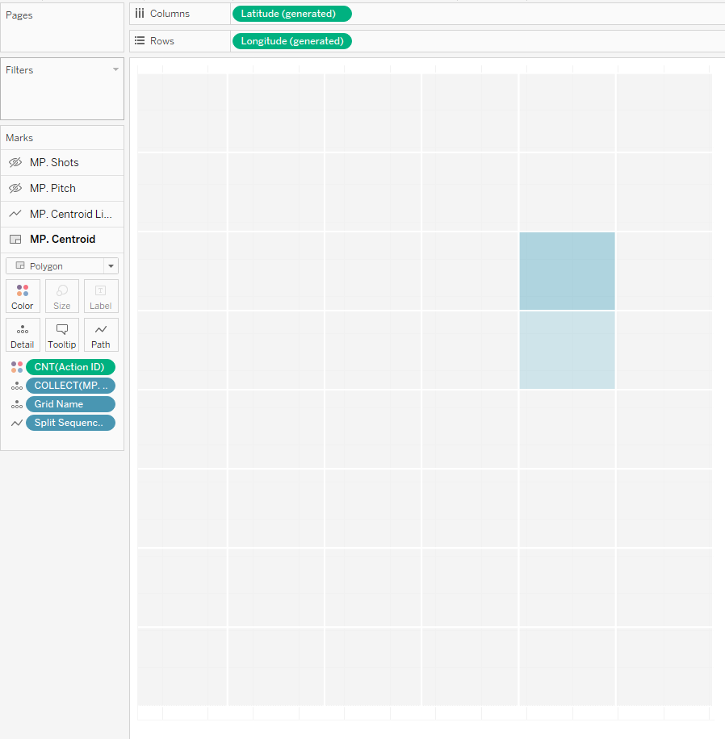
Next we can add in the pitch frame. This data we had joined at the very end.
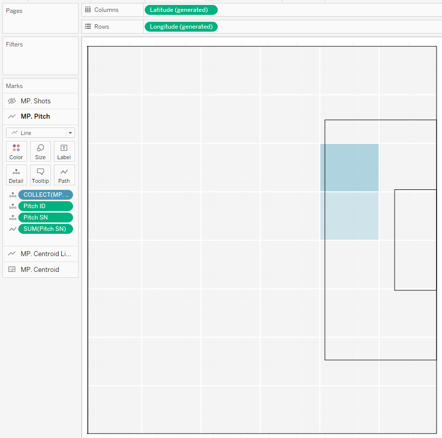
With all things lines and polygons, of course again we need to make sure we have the right things on detail and more importantly path.
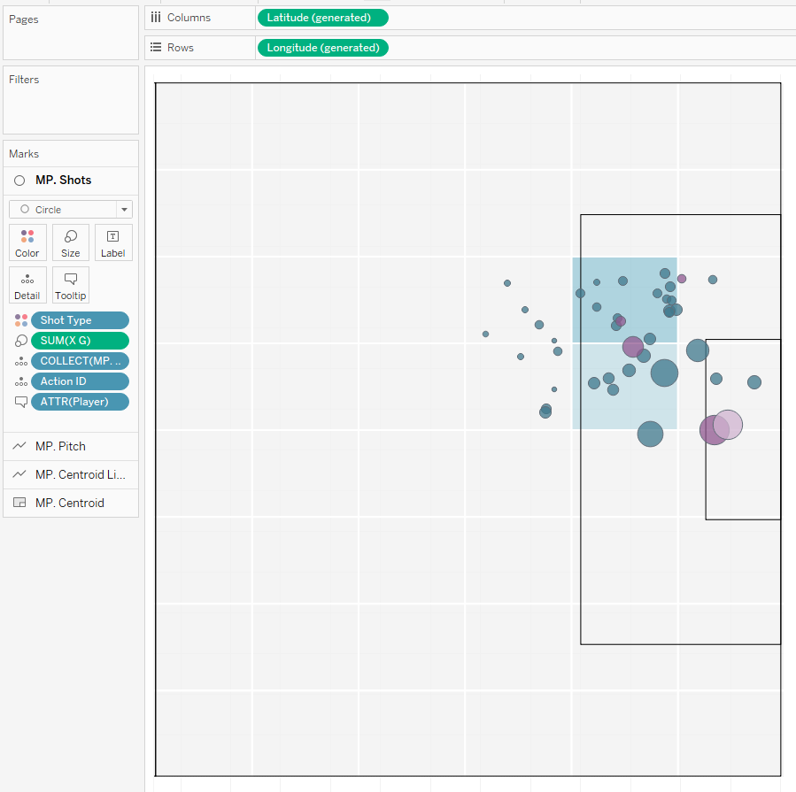
Final touches therefore is creating a new layer of just the shot co-ordinates to overlay on top.
You can start to play around with grid size, colour and pitch layout to be able to transform your visuals.
Going Further:
Try plot shot maps for a whole team.
Try hide squares that weren't shot from.
Try adding in interactivity or tooltips into the visual.
Everything built in Tableau with no background maps feels quite slick in my opinion. Let me know your thoughts.
LOGGING OFF,CJ
 At this point you might think it's a little confusing with no context. It's always good to remember we have the understat website as a reference point.
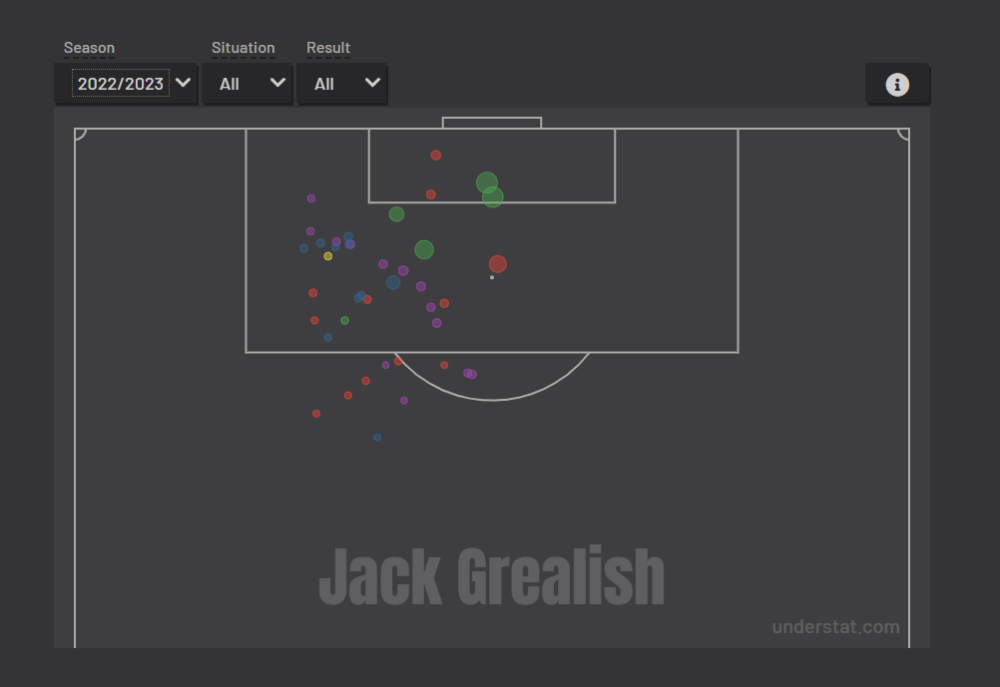
HALF PITCH
The next thing we want to do is to start building a base of points for the pitch. (Of course, we can render these as a background image in Tableau, but why not for this tutorial we give it a go creating a pitch using lines!
At this point you might think it's a little confusing with no context. It's always good to remember we have the understat website as a reference point.
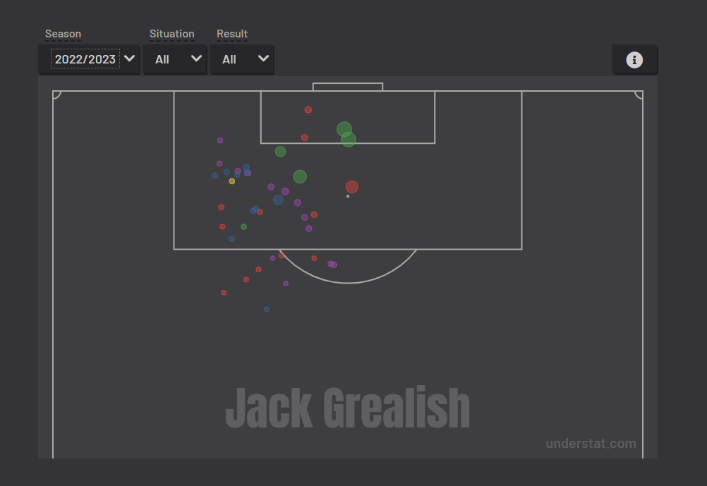
HALF PITCH
The next thing we want to do is to start building a base of points for the pitch. (Of course, we can render these as a background image in Tableau, but why not for this tutorial we give it a go creating a pitch using lines!


 Really all this is doing is creating those grids that we will overlay on top of our pitch.
But now we really want to find what the co-ordinates are for each square!
Really all this is doing is creating those grids that we will overlay on top of our pitch.
But now we really want to find what the co-ordinates are for each square!
 Everything built in Tableau with no background maps feels quite slick in my opinion. Let me know your thoughts.
LOGGING OFF,
CJ
Everything built in Tableau with no background maps feels quite slick in my opinion. Let me know your thoughts.
LOGGING OFF,
CJ